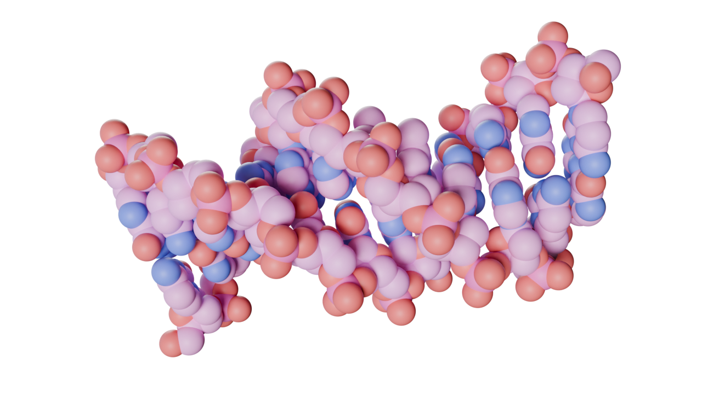

Extensions on GitHub
Brady Johnston
2025-09-19
Who am I?
I’m Brady!
Biochemist & Biophysicist turned 3D Animator
2022 talk about Visualising Viruses
Molecular Nodes
- Import & Animation of molecular data sets
- Brings data inside of Blender
- Builds around Geometry Nodes
Molecular Nodes
Add-on & a Python Package?
Add-on & a Python Package?

Building on GitHub
Molecular Nodes on GitHub

Why build on GitHub?
- Not paid at all, just benefited a lot from using it
- Other platforms offer similar (CodeBerg etc.) I just have experience with GitHub
- Free file hosting (within ‘reason’)
- Free compute for automated testing and deployment (public projects)
- Increased visibility (>1,000 ⭐️!)(not guaranteed)
Building & Distributing MN

Building & Distributing MN
- Run tests against different versions of Blender (including daily builds)
- Run tests against
bpyinstalled viapipfor automated pipelines - Download and bundle
.whlfiles with extension - Upload extension to GitHub & Extensions platform
Running Tests
name: tests
on:
push:
branches: ["main"]
pull_request:
branches: ["*"]
jobs:
blender:
runs-on: ${{ matrix.os }}
strategy:
max-parallel: 4
fail-fast: false
matrix:
version: ["4.5", "daily"]
os: [ubuntu-latest, macos-latest, windows-latest]
steps:
- uses: actions/checkout@v4
- uses: BradyAJohnston/setup-blender@v3
with:
version: ${{ matrix.version }}
- name: Install in Blender
run: |
blender -b -P tests/python.py -- -m pip install ".[test]"
- name: Run Tests
run: |
blender -b -P tests/run.py -- -vv tests --cov --cov-report=xml
- name: Expose coverage as a CI download
uses: actions/upload-artifact@v4
if: matrix.os == 'ubuntu-latest' && matrix.version == '4.2.5'
with:
name: coverage.xml
path: coverage.xml
- name: Upload coverage reports to Codecov
if: matrix.os == 'ubuntu-latest'
uses: codecov/codecov-action@v3Breaking 5.0 Changes
Tests are run daily on MacOS, Windows & Linux against the latest daily alpha builds from Blender.
BLENDER_EEVEE_NEXTrenamed toBLENDER_EEVEE#855
- Slight change in volume -> mesh #897
- Compositor no longer has
use_nodes#971
Set Curve Resolutionnot updating datablock #141721
Anatomy of a GitHub Action
setup-blender build and distribute documentation
Distributing on GitHub
Distributing your own Extensions
Details and built: https://bradyajohnston.github.io/extensions/ Subscribe with:
How is it Built?
name: Download Release Files
on:
push:
branches: ["main"]
schedule:
- cron: '0 0 * * *'
jobs:
build-website:
runs-on: macos-14
permissions: write-all
steps:
- uses: actions/checkout@v4
- uses: quarto-dev/quarto-actions/setup@v2
- uses: bradyajohnston/setup-blender@v2.1
with:
version: 4.3.2
- name: Install uv
uses: astral-sh/setup-uv@v4
with:
version: "latest"
- name: Get Release Assets
run: |
uv run --with requests scripts/download.py
env:
GITHUB_TOKEN: ${{ github.token }}
- name: Generate index.json
run: |
blender --command extension server-generate --repo-dir=repo
- name: Quarto Render
run: |
uv run --with pyyaml quarto render
- name: Publish to GitHub Pages (and render)
uses: quarto-dev/quarto-actions/publish@v2
with:
target: gh-pages
path: .
render: false
env:
GITHUB_TOKEN: ${{ secrets.GITHUB_TOKEN }}How is it built?
name: Download Release Files
on:
push:
branches: ["main"]
schedule:
- cron: '0 0 * * *'
jobs:
build-website:
runs-on: macos-14
permissions: write-all
steps:
- uses: bradyajohnston/setup-blender@v2.1
with:
version: 4.3.2
- name: Get Release Assets
run: |
uv run --with requests scripts/download.py
- name: Generate index.json
run: |
blender --command extension server-generate --repo-dir=repo
- name: Quarto Render
run: |
uv run --with pyyaml quarto render
- name: Publish to GitHub Pages (and render)
uses: quarto-dev/quarto-actions/publish@v2
with:
target: gh-pages
path: .
render: false
env:
GITHUB_TOKEN: ${{ secrets.GITHUB_TOKEN }}A live example
github.com/BradyAJohnston/monkeymadness
Your Personal Extensions Repo
- Build and release add-ons on GitHub (through automations!) in their own repos
- Compile multiple add-ons in a single subscribeable repo
- Users add ‘your personal repo’ - they get updates just like they would from the official Extensions platform
Testing your Add-ons
Check out Spencer’s talk on testing add-ons: